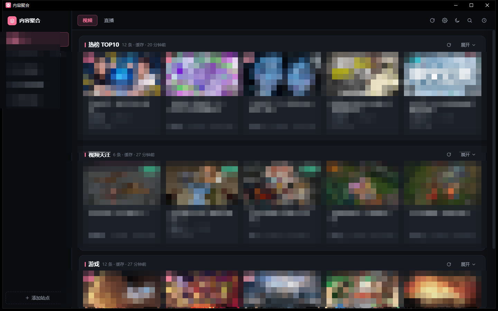
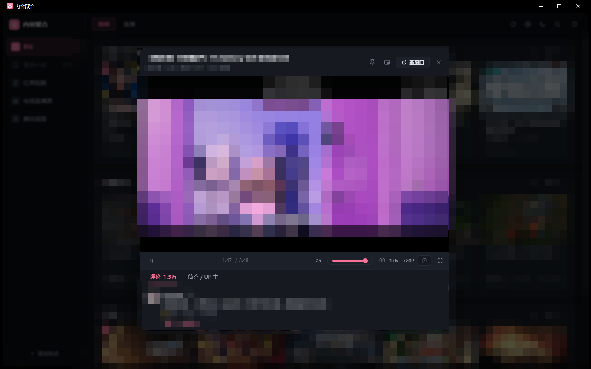
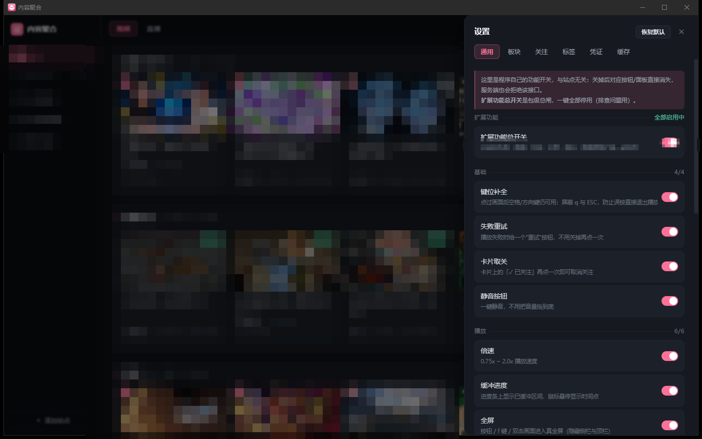

这是什么
不同来源的内容各有一套浏览方式：同一件事要在几个页面之间翻，播放器、弹幕、评论区还各长各的。更麻烦的是它们的形态根本不一样——综合视频靠分区和榜单，剧集靠专辑和分集，短剧一集两分钟要连着往下看，电视直播则是另一套频道表。这个客户端把这些来源合到同一个窗口：一套界面、一个播放器、一套键位。
界面也不套平台的网页：内容区由可增删的板块拼成，播放器、弹幕、评论、简介都是自己重写的控件，所以布局能改、能收、能关得干净。
本页截图中的站点标识、封面、标题、画面与评论已整体打码；正文按内容形态介绍各个来源，理由见文末合规说明。

界面布局
窗口分三段：最左一列窄侧栏做全局导航，竖向排内容源入口，当前项高亮，底部常驻一个添加按钮；顶部横栏左侧是当前源的分类切换（视频 / 直播），右侧依次是刷新、设置、主题、搜索、历史；剩下的整块是内容区，由若干板块卡纵向堆叠——卡头写板块名与刷新状态，卡身是 3～5 列自适应的内容卡（封面、标题、数据、时长），可单卡刷新、展开或收起。播放器不占新窗口，而是盖在内容区之上的一层，约占窗口八成。
功能模块
资源整合
几种形态不同的内容被拉平成同一种东西：一张卡片、一个播放器、一套缓存与历史。侧栏切换即整体换页，每个来源有独立的板块配置、关注列表与缓存，互不串台；当前来源与分类状态重启后恢复。
能看什么
| 来源 | 内容形态 | 在这个客户端里能做什么 |
|---|---|---|
| 综合视频 | 分区视频、榜单、创作者投稿 | 分区与榜单浏览、创作者关注、多 P / 合集切集、弹幕、评论 |
| 长视频 | 剧集、电影、综艺 | 按专辑展开分集、选集连播、清晰度档位随账号可用范围给出 |
| 短剧 | 竖屏连载短剧 | 按剧集连续播放、自动下一集、按分类与标签翻 |
| 电视直播 | 频道直播 | 频道表浏览、多线路备用、起播失败自动换线、内嵌播放 |
| 小说 | — | 入口已留，尚未开放 |
同一个「选集」在四种来源里是四种东西——分 P、专辑分集、剧集序号、频道线路，在这里被收成同一个侧栏面板；「关注」也一样，视频创作者与直播房间走同一份列表。这是聚合真正省事的地方：记一套操作，而不是记四套。
自由的界面
内容区不是写死的模板，而是由可增删的板块拼起来：板块能排序、改名、改类型、改刷新周期，也能整块收起；卡片列数跟着窗口宽度走，宽屏多排、窄屏少排，不拉伸单卡。深浅两套主题共用一组颜色变量，切换即时生效。
自建播放器
不用平台的网页播放器：画面、控制条、进度条、音量、倍速、画质、选集、全屏全是自己写的控件，键位与交互全站一致。

| 能力 | 说明 |
|---|---|
| 内嵌播放 | 画面嵌在面板里，不开浏览器、不弹外部窗口 |
| 倍速 | 0.75 / 1 / 1.25 / 1.5 / 2 档，直播场景自动禁用 |
| 画质 | 只列源端实际能兑现的档位，拿不到会退回并提示，不静默降级 |
| 选集连播 | 多段内容与连载都有侧栏选集面板，支持上一集 / 下一集 / 自动连播 |
| 桌面浮窗 | 画面可交给独立顶层小窗，拖到桌面任意位置，主窗口最小化后仍在，锁 16:9 |
| 缓冲进度 | 进度条标出已缓冲区间，悬停显示时间点 |
| 失败重试 | 起播失败就地给重试按钮；起播超时自动换一次软解，避免黑屏 |
| 快捷键 | 空格播放暂停，左右 ±5 秒，上下音量，F 全屏，ESC 退出 |
弹幕
弹幕不走平台的播放器，直接叠在自己的画面上随进度滚动，暂停即停。不透明度、字号、速度、显示区域、密度都能调，支持屏蔽词与一键开关，状态记忆。
评论与简介
播放器下方两个页签，各自独立滚动：评论按热度排序、底部分页加载；简介页给内容说明与点赞、投币等计数。看评论不用跳出去，看简介也不用另开页面。
历史与续播
播放中每 10 秒落一次进度，关掉播放器或退出程序都不丢；顶栏「历史」列出最近观看，点开即续。只存本地，可逐条删除或整表清空。
设置与缓存
设置抽屉从右侧滑出，顶部页签按当前内容源动态显示：通用（功能开关）、板块、关注、标签、凭证、缓存，末尾还挂着功能与历史两页，窗口窄时需横向滚动。

缓存页统一管理接口响应、封面、图标、弹幕、视频预缓存五类数据，各有配额，超出按 LRU 淘汰，正在播放的内容不会被误删。
外观与窗口
圆角窗体、深色标题栏、独立应用图标；重复启动会提示已有窗口，不会两个程序抢同一个端口。
合规与免责
程序仅在本机运行，不对外提供任何服务，也不分发任何内容。
| 模块 | 审查结论 | 文档处理 |
|---|---|---|
| 通用界面与播放能力 | 无合规风险 | 完整展示 |
| 各来源的形态与用法 | 只写「有什么、能做什么」，属产品层描述 | 按内容形态介绍 |
| 具体站点标识与界面 | 点名加展示容易把话题引向取流方式，存在合规风险 | 截图整体打码，正文不出现名称 |
本页只回答「能看什么、怎么用」，不回答「内容怎么拿到」——取流、解密、登录态一概不涉及。
本页不含任何实现细节（接口、密钥、参数、源码），避免构成规避手段的说明书。
- 内容著作权归原平台与作者所有，程序不存储、不转存、不分发。
- 账号凭证只留本机，不上传、不转发。
- 仅供个人使用与学习，请勿商用或公开传播。